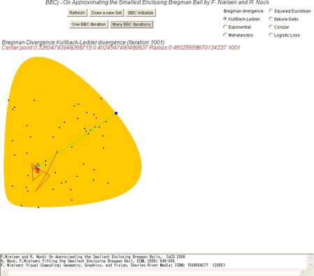

<HTML>
<HEAD>
<TITLE>
BBCj | Approximating the Smallest Enclosing Bregman Balls in Java by F. Nielsen and R. Nock
</TITLE>
</HEAD>
<!--- Frank NIELSEN May 2006 >

<BODY BGCOLOR="FFFFFF"> 


<H2>Approximating the Smallest Bregman Balls</H2>
BBCj is an applet that demonstrates the generalization to <em>arbitrary Bregman divergences</em> of the simple iterative
 approximation scheme of Badoiu and Clarkson (Euclidean distance) for finding a guaranteed approximation of the smallest enclosing ball of a given point set
in arbitary dimension. 
<HR>
You can find more on Bregman balls <A HREF="http://www.csl.sony.co.jp/person/nielsen/BregmanBall/">here</A> (videos, papers and slides).
<HR>
You can choose the Bregman divergence and fit iteratively the smallest enclosing Bregman ball. 
We have computed exactly the gradient and reciprocal gradient for the following Bregman divergences:
<font size=-2>
<UL>
<LI>Squared Euclidean distance (In that case, BBC matches exactly the seminal algorithm of Badoui and Clarkson),
<LI>Kullback-Leibler divergence (relative entropy),
<LI>Itakura-Saito divergence (often used in sound processing),
<LI>Exponential divergence,
<LI>Csiszar divergence (set to alpha=0.5),
<LI>Mahalanobis distance (inverse covariance matrix is hardcoded as [ [0.6 0.4] [0.1 0.5] ]),
<LI>Logistic loss.
</UL>
</font>
<HR>
<CENTER>
<APPLET
codebase = "."
archive ="bbcj.jar"
code	= "BBCj.class"
width	= "900"
height	= "800"
	>
<font color="#FF0000">
<b>
YOU NEED TO AUTHORIZE JAVA TO DISPLAY THE APPLET!<BR>
THIS IS HOW THE WEB PAGE LOOKS ONCE YOU'LL ALLOW JAVA:</b><BR>
</font>

</APPLET>

</CENTER>
<BR>
This applet requires Java Runtime Environment Version 5.0 Update 6 to run properly  (You can update from <A HREF="http://java.sun.com/">http://java.sun.com</A>)
<BR>

<H3>References</H3>
<UL>
<LI>F. Nielsen, R. Nock: On Approximating the Smallest Enclosing Bregman Balls . SoCG 2006.

<LI>R. Nock, F. Nielsen: Fitting the Smallest Enclosing Bregman Ball. ECML 2005: 649-656

<LI>F. Nielsen: <A HREF="http://www.csl.sony.co.jp/person/nielsen/visualcomputing/"><b>Visual Computing: Geometry, Graphics, and Vision</b></A>. Charles River Media, ISBN 1-58450-427-7 (2005)

</UL>

<HR>
The applet and all information on this Web page are provided without any kind of warranty for pedagogical purposes only.  
(c) Frank Nielsen, Last updated May 2006.
</BODY>
</HTML>
